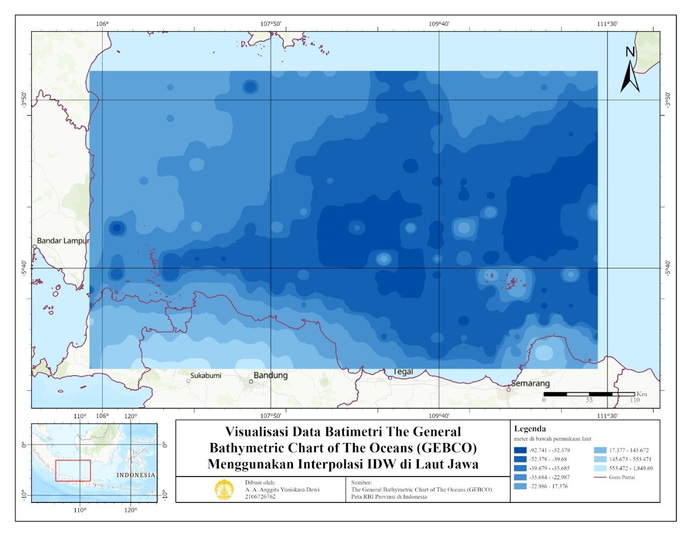
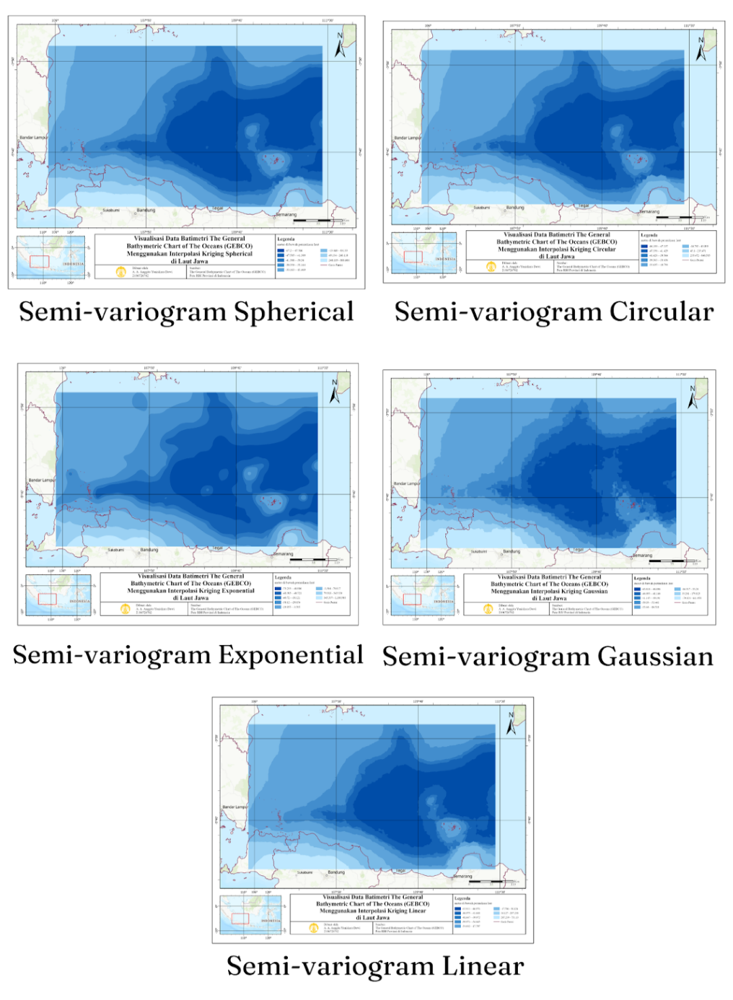
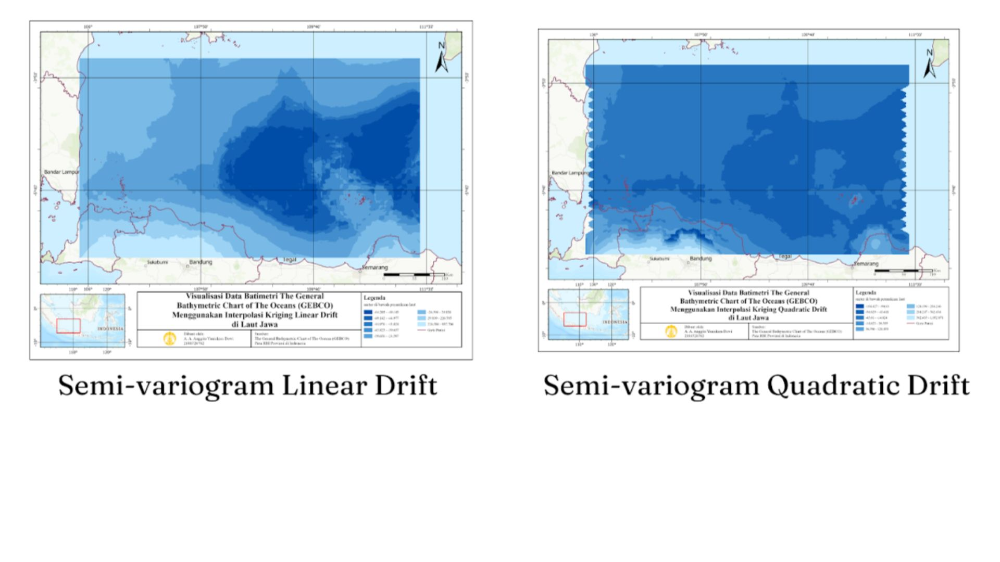
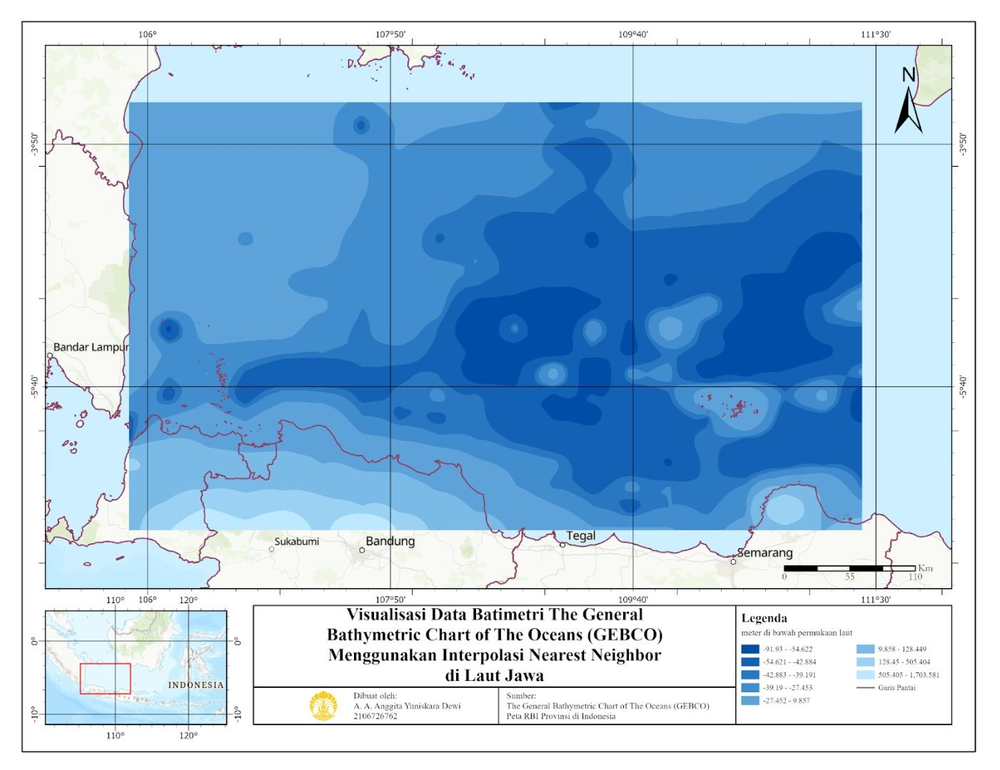
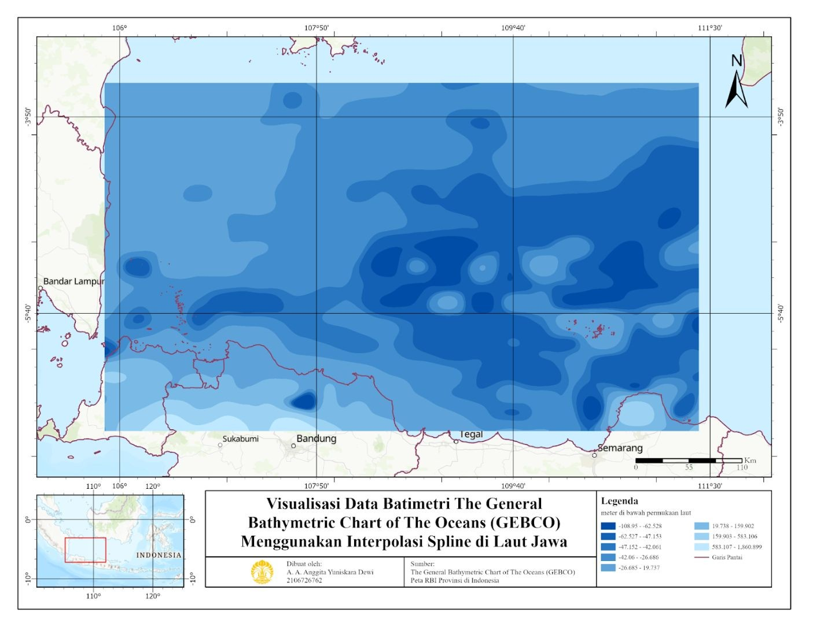
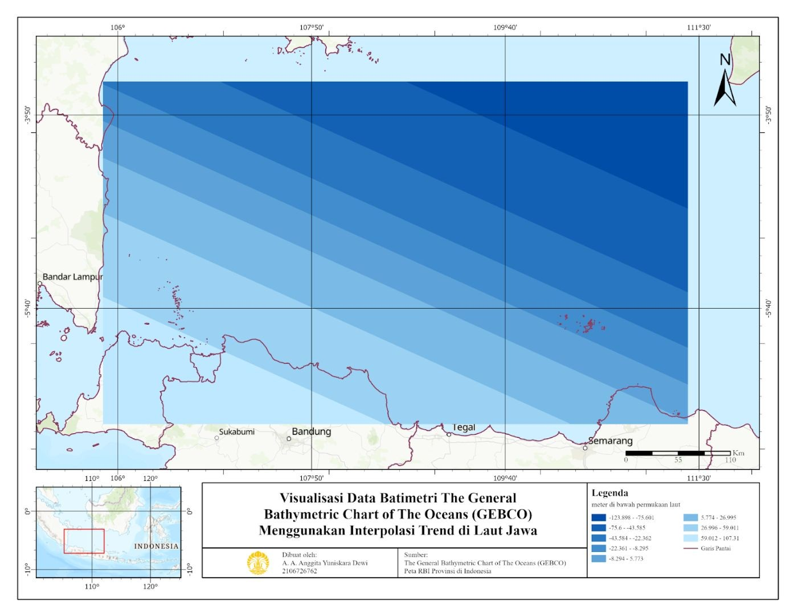

Analisis dan Visualisasi Batimetri di Laut Jawa dengan Memanfaatkan GEBCO dan Teknik Interpolasi
Latar belakang
Informasi kedalaman perairan sangat penting untuk pemanfaatan ruang di wilayah laut. Batimetri, yaitu pengukuran dan pemetaan topografi dasar laut, menyajikan informasi tersebut dalam bentuk kedalaman beserta garis konturnya. Pengukuran batimetri kini dilakukan secara modern dengan metode hidrografi akustik, yaitu single beam atau multi beam echosounder yang dipadukan dengan sensor posisi GNSS.
The General Bathymetric Chart of The Oceans (GEBCO) adalah program di bawah Organisasi Hidrografi Internasional (IHO) yang bertujuan memetakan seluruh dasar laut dan menyediakan salah satu data batimetri beresolusi terbaik, yaitu 30 arc second atau sekitar 1 kilometer di ekuator. Penelitian ini memilih Laut Jawa karena kedalamannya yang relatif dangkal, sehingga cocok untuk pemetaan batimetri dengan akurasi tinggi, serta karena keragaman fitur dasar lautnya. Tujuannya adalah membandingkan beberapa teknik interpolasi untuk memvisualisasikan batimetri dan memilih metode yang paling sesuai.
Data yang digunakan
| Data | Format Data | Jenis Data | Sumber |
|---|---|---|---|
| Batimetri GEBCO 2023 (utara Pulau Jawa) | Raster (GeoTIFF) | Sekunder | GEBCO |
| Peta dasar dan garis pantai | Vektor | Sekunder | Peta RBI Indonesia |
Metode
Data batimetri diunduh dari situs GEBCO dengan membuat area of interest (AOI) di utara Pulau Jawa, lalu diekspor dalam format GeoTIFF. Data kemudian diolah di ArcGIS Pro. Pertama, dibuat titik-titik sampel pada wilayah kajian dengan tool Create Fishnet, lalu nilai piksel kedalaman dipindahkan ke titik-titik tersebut dengan Extract Multi Values to Points.
Titik-titik tersebut diinterpolasi dengan beberapa teknik untuk memperkirakan kedalaman di lokasi yang tidak memiliki data, kemudian dibandingkan hasilnya.
| Teknik Interpolasi | Prinsip Kerja |
|---|---|
| IDW | Bobot titik sampel berbanding terbalik dengan jaraknya ke titik yang diestimasi |
| Kriging (ordinary dan universal) | Memakai semivariogram untuk memodelkan korelasi spasial antar titik |
| Natural Neighbor | Hanya memakai titik tetangga terdekat dengan pembobotan proporsional (diagram Voronoi) |
| Spline | Menyusun permukaan halus dari polinomial kubik pada tiap segmen |
| Trend | Menyesuaikan fungsi matematis untuk menangkap pola umum kedalaman |
Setiap hasil interpolasi disusun menjadi peta batimetri lengkap dengan judul, skala, dan legenda. Gradasi biru dipakai untuk menunjukkan kedalaman: biru gelap untuk perairan lebih dalam dan biru terang untuk perairan lebih dangkal.
Hasil
Lima teknik interpolasi menghasilkan peta batimetri yang berbeda-beda. Berikut hasil masing-masing metode beserta catatan singkatnya (klik gambar untuk memperbesar).






Natural neighbor dipilih sebagai metode terbaik karena mampu menangkap variasi spasial yang kompleks dan menghasilkan permukaan yang merata. Pada petanya, kedalaman terbagi dalam delapan kelas dengan titik terdalam sekitar 91 meter yang berada cukup jauh dari daratan. Area ini termasuk zona epipelagik, lapisan atas laut yang masih diterangi cahaya matahari. Fitur dasar laut yang mungkin ada meliputi paparan dangkal di dekat daratan, continental shelf di bagian tengah, dan pulau-pulau kecil di sekitar Pulau Jawa.
Kesimpulan
Teknik interpolasi memungkinkan data batimetri yang tersebar tidak merata diubah menjadi permukaan kedalaman yang kontinu sehingga lebih mudah divisualisasikan dan dianalisis. Dari lima metode yang dibandingkan, natural neighbor memberikan hasil yang paling halus, detail, dan representatif untuk Laut Jawa, sedangkan IDW kurang mulus dan trend terlalu umum. Pemilihan metode tetap perlu menyesuaikan karakteristik data dan tujuan analisis.
← View other projects